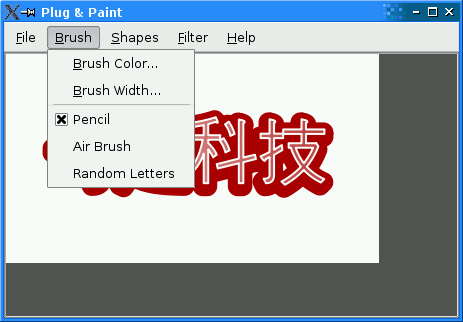
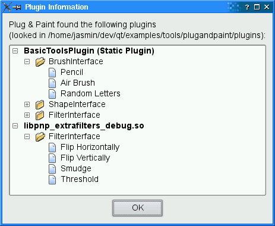

| Home · All Classes · Main Classes · Grouped Classes · Modules · Functions |
Files:
The Plug & Paint example demonstrates how to write Qt applications that can be extended through plugins.

A plugin is a dynamic library that can be loaded at run-time to extend an application. Qt makes it possible to create custom plugins and to load them using QPluginLoader. The Plug & Paint example uses plugins to support custom brushes, shapes, and image filters. A single plugin can provide multiple brushes, shapes, and/or filters.
If you want to learn how to make your own application extensible through plugins, we recommend that you start by reading this overview, which explains how to make an application use plugins. Afterward, you can read the Basic Tools and Extra Filters overviews, which show how to implement plugins.
Plug & Paint consists of the following classes:
We will start by reviewing the interfaces defined in interfaces.h. These interfaces are used by the Plug & Paint application to access extra functionality. They are implemented in the plugins.
class BrushInterface
{
public:
virtual ~BrushInterface() {}
virtual QStringList brushes() const = 0;
virtual QRect mousePress(const QString &brush, QPainter &painter,
const QPoint &pos) = 0;
virtual QRect mouseMove(const QString &brush, QPainter &painter,
const QPoint &oldPos, const QPoint &newPos) = 0;
virtual QRect mouseRelease(const QString &brush, QPainter &painter,
const QPoint &pos) = 0;
};
The BrushInterface class declares four pure virtual functions. The first pure virtual function, brushes(), returns a list of strings that identify the brushes provided by the plugin. By returning a QStringList instead of a QString, we make it possible for a single plugin to provide multiple brushes. The other functions have a brush parameter to identify which brush (among those returned by brushes()) is used.
mousePress(), mouseMove(), and mouseRelease() take a QPainter and one or two QPoints, and return a QRect identifying which portion of the image was altered by the brush.
The class also has a virtual destructor. Interface classes usually don't need such a destructor (because it would make little sense to delete the object that implements the interface through a pointer to the interface), but some compilers emit a warning for classes that declare virtual functions but no virtual destructor. We provide the destructor to keep these compilers happy.
class ShapeInterface
{
public:
virtual ~ShapeInterface() {}
virtual QStringList shapes() const = 0;
virtual QPainterPath generateShape(const QString &shape,
QWidget *parent) = 0;
};
The ShapeInterface class declares a shapes() function that works the same as BrushInterface's brushes() function, and a generateShape() function that has a shape parameter. Shapes are represented by a QPainterPath, a data type that can represent arbitrary 2D shapes or combinations of shapes. The parent parameter can be used by the plugin to pop up a dialog asking the user to specify more information.
class FilterInterface
{
public:
virtual ~FilterInterface() {}
virtual QStringList filters() const = 0;
virtual QImage filterImage(const QString &filter, const QImage &image,
QWidget *parent) = 0;
};
The FilterInterface class declares a filters() function that returns a list of filter names, and a filterImage() function that applies a filter to an image.
Q_DECLARE_INTERFACE(BrushInterface,
"com.trolltech.PlugAndPaint.BrushInterface/1.0")
Q_DECLARE_INTERFACE(ShapeInterface,
"com.trolltech.PlugAndPaint.ShapeInterface/1.0")
Q_DECLARE_INTERFACE(FilterInterface,
"com.trolltech.PlugAndPaint.FilterInterface/1.0")
To make it possible to query at run-time whether a plugin implements a given interface, we must use the Q_DECLARE_INTERFACE() macro. The first argument is the name of the interface. The second argument is a string identifying the interface in a unique way. By convention, we use a "Java package name" syntax to identify interfaces. If we later change the interfaces, we must use a different string to identify the new interface; otherwise, the application might crash. It is therefore a good idea to include a version number in the string, as we did above.
The Basic Tools plugin and the Extra Filters plugin shows how to derive from BrushInterface, ShapeInterface, and FilterInterface.
A note on naming: It might have been tempting to give the brushes(), shapes(), and filters() functions a more generic name, such as keys() or features(). However, that would have made multiple inheritance impractical. When creating interfaces, we should always try to give unique names to the pure virtual functions.
The MainWindow class is a standard QMainWindow subclass, as found in many of the other examples (e.g., Application). Here, we'll concentrate on the parts of the code that are related to plugins.
void MainWindow::loadPlugins()
{
pluginsDir = QDir(qApp->applicationDirPath());
#if defined(Q_OS_WIN)
if (pluginsDir.dirName().toLower() == "debug" || pluginsDir.dirName().toLower() == "release")
pluginsDir.cdUp();
#elif defined(Q_OS_MAC)
if (pluginsDir.dirName() == "MacOS") {
pluginsDir.cdUp();
pluginsDir.cdUp();
pluginsDir.cdUp();
}
#endif
pluginsDir.cd("plugins");
The loadPlugins() function is called from the MainWindow constructor to detect plugins and update the Brush, Shapes, and Filters menus. We start by initializing the pluginsDir member variable to refer to the plugins directory of the Plug & Paint example. On Unix, this is just a matter of initializing the QDir variable with QApplication::applicationDirPath(), the path of the executable file, and to do a cd(). On Windows and Mac OS X, this file is usually located in a subdirectory, so we need to take this into account.
foreach (QString fileName, pluginsDir.entryList(QDir::Files)) {
QPluginLoader loader(pluginsDir.absoluteFilePath(fileName));
QObject *plugin = loader.instance();
if (plugin) {
BrushInterface *iBrush = qobject_cast<BrushInterface *>(plugin);
if (iBrush)
addToMenu(plugin, iBrush->brushes(), brushMenu,
SLOT(changeBrush()), brushActionGroup);
ShapeInterface *iShape = qobject_cast<ShapeInterface *>(plugin);
if (iShape)
addToMenu(plugin, iShape->shapes(), shapesMenu,
SLOT(insertShape()));
FilterInterface *iFilter = qobject_cast<FilterInterface *>(plugin);
if (iFilter)
addToMenu(plugin, iFilter->filters(), filterMenu,
SLOT(applyFilter()));
pluginFileNames += fileName;
}
}
We use QDir::entryList() to get a list of all files in that directory. Then we iterate over the result using foreach and try to load the plugin using QPluginLoader.
To the application that loads the plugin, a Qt plugin is simply a QObject. That QObject may implement extra interfaces using multiple inheritance. The object is accessible through QPluginLoader::instance(). If the dynamic library isn't a Qt plugin, or if it was compiled against an incompatible version of the Qt library, QPluginLoader::instance() returns a null pointer.
If QPluginLoader::instance() is non-null, we check which interfaces it implements using qobject_cast(). First, we try to cast the plugin instance to a BrushInterface; if it works, we call the private function addToMenu() with the list of brushes returned by brushes(). Then we do the same with the ShapeInterface and the FilterInterface.
brushMenu->setEnabled(!brushActionGroup->actions().isEmpty());
shapesMenu->setEnabled(!shapesMenu->actions().isEmpty());
filterMenu->setEnabled(!filterMenu->actions().isEmpty());
}
At the end, we enable or disable the Brush, Shapes, and Filters menus based on whether they contain any items.
void MainWindow::aboutPlugins()
{
PluginDialog dialog(pluginsDir.path(), pluginFileNames, this);
dialog.exec();
}
The aboutPlugins() slot is called on startup and can be invoked at any time through the About Plugins action. It pops up a PluginDialog, providing information about the loaded plugins.

The addToMenu() function is called from loadPlugin() to create QActions for custom brushes, shapes, or filters and add them to the relevant menu. The QAction is created with the plugin from which it comes from as the parent; this makes it convenient to get access to the plugin later.
void MainWindow::changeBrush()
{
QAction *action = qobject_cast<QAction *>(sender());
BrushInterface *iBrush = qobject_cast<BrushInterface *>(action->parent());
QString brush = action->text();
paintArea->setBrush(iBrush, brush);
}
The changeBrush() slot is invoked when the user chooses one of the brushes from the Brush menu. We start by finding out which action invoked the slot using QObject::sender(). Then we get the BrushInterface out of the plugin (which we conveniently passed as the QAction's parent) and we call PaintArea::setBrush() with the BrushInterface and the string identifying the brush. Next time the user draws on the paint area, PaintArea will use this brush.
void MainWindow::insertShape()
{
QAction *action = qobject_cast<QAction *>(sender());
ShapeInterface *iShape = qobject_cast<ShapeInterface *>(action->parent());
QPainterPath path = iShape->generateShape(action->text(), this);
if (!path.isEmpty())
paintArea->insertShape(path);
}
The insertShape() is invoked when the use chooses one of the shapes from the Shapes menu. We retrieve the QAction that invoked the slot, then the ShapeInterface associated with that QAction, and finally we call ShapeInterface::generateShape() to obtain a QPainterPath.
void MainWindow::applyFilter()
{
QAction *action = qobject_cast<QAction *>(sender());
FilterInterface *iFilter =
qobject_cast<FilterInterface *>(action->parent());
QImage image = iFilter->filterImage(action->text(), paintArea->image(),
this);
paintArea->setImage(image);
}
The applyFilter() slot is similar: We retrieve the QAction that invoked the slot, then the FilterInterface associated to that QAction, and finally we call FilterInterface::filterImage() to apply the filter onto the current image.
The PaintArea class contains some code that deals with BrushInterface, so we'll review it briefly.
void PaintArea::setBrush(BrushInterface *brushInterface, const QString &brush)
{
this->brushInterface = brushInterface;
this->brush = brush;
}
In setBrush(), we simply store the BrushInterface and the brush that are given to us by MainWindow.
void PaintArea::mouseMoveEvent(QMouseEvent *event)
{
if ((event->buttons() & Qt::LeftButton) && lastPos != QPoint(-1, -1)) {
if (brushInterface) {
QPainter painter(&theImage);
setupPainter(painter);
QRect rect = brushInterface->mouseMove(brush, painter, lastPos,
event->pos());
update(rect);
}
lastPos = event->pos();
}
}
In the mouse move event handler, we call the BrushInterface::mouseMove() function on the current BrushInterface, with the current brush. The mouse press and mouse release handlers are very similar.
The PluginDialog class provides information about the loaded plugins to the user. Its constructor takes a path to the plugins and a list of plugin file names. It calls populateTreeWidget() to fill the QTreeWdiget with information about the plugins:
void PluginDialog::populateTreeWidget(const QString &path,
const QStringList &fileNames)
{
if (fileNames.isEmpty()) {
label->setText(tr("Plug & Paint couldn't find any plugins in the %1 "
"directory.")
.arg(QDir::convertSeparators(path)));
treeWidget->hide();
} else {
label->setText(tr("Plug & Paint found the following plugins in the %1 "
"directory:")
.arg(QDir::convertSeparators(path)));
QDir dir(path);
foreach (QString fileName, fileNames) {
QPluginLoader loader(dir.absoluteFilePath(fileName));
QObject *plugin = loader.instance();
QTreeWidgetItem *pluginItem = new QTreeWidgetItem(treeWidget);
pluginItem->setText(0, fileName);
treeWidget->setItemExpanded(pluginItem, true);
QFont boldFont = pluginItem->font(0);
boldFont.setBold(true);
pluginItem->setFont(0, boldFont);
if (plugin) {
BrushInterface *iBrush = qobject_cast<BrushInterface *>(plugin);
if (iBrush)
addItems(pluginItem, "BrushInterface", iBrush->brushes());
ShapeInterface *iShape = qobject_cast<ShapeInterface *>(plugin);
if (iShape)
addItems(pluginItem, "ShapeInterface", iShape->shapes());
FilterInterface *iFilter =
qobject_cast<FilterInterface *>(plugin);
if (iFilter)
addItems(pluginItem, "FilterInterface", iFilter->filters());
}
}
}
}
The populateTreeWidget() is very similar to MainWindow::loadPlugins(). It uses QPluginLoader to load the plugins and uses qobject_cast() to find out which interfaces are implemented by the plugins.
This completes our review of the Plug & Paint application. At this point, you might want to take a look at the Basic Tools example plugin.
| Copyright © 2006 Trolltech | Trademarks | Qt 4.1.5 |